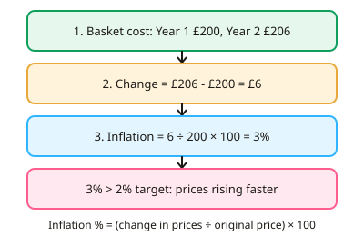

GCSE Economics · Topic 7
Government Macroeconomic Policies
This topic looks at how the government and the Bank of England try to manage the whole economy.
We will measure inflation using the Consumer Prices Index, then look at fiscal policy, monetary policy and supply side policies.
Finally we evaluate how well each policy works, and the trade offs between different economic objectives.
- 4 subtopics
- 231 questions
- Free: 7.1 notes and 10 questions
In this topic
- 7.1Inflation, deflation and the Consumer Prices Index: measuring and calculatingFree below · 61 questions
- 7.2Fiscal policy: taxation, government spending and the budgetOpen in Full Marks · 85 questions
- 7.3Monetary policy: interest rates and the Bank of EnglandOpen in Full Marks · 50 questions
- 7.4Supply-side policies and evaluating policy conflicts and trade-offsOpen in Full Marks · 35 questions
7.1 · Free notes
Inflation, deflation and the Consumer Prices Index: measuring and calculating

Key points
- Inflation is a sustained rise in the general price level, so money buys less over time. Deflation is a sustained fall in the general price level, meaning a negative inflation rate.
- Disinflation is a fall in the *rate* of inflation, for example from 5% to 3%. Prices are still rising, but more slowly. Examiners often test this confusion with deflation.
- The UK's official measure is the Consumer Prices Index (CPI), published monthly by the Office for National Statistics (ONS). It tracks the cost of a typical household basket of goods and services of roughly 700 items.
- CPI uses weights. Items on which households spend more, such as housing costs, food and transport, count for more than items they spend little on. The basket is updated every year to reflect changing spending habits.
- Inflation rate (%) = (new price level - old price level) ÷ old price level × 100. For example, a basket rising from £200 to £206 gives (6 ÷ 200) × 100 = 3%.
- A price index compares prices with a base year set at 100. An index of 112 means prices are 12% higher than in the base year. To find inflation between two years, calculate the percentage change in the index.
- The UK government sets the inflation target of 2% CPI, and the Bank of England must try to achieve it. A low, stable rate gives certainty for firms, workers and savers.
- Demand-pull inflation happens when aggregate demand grows faster than aggregate supply. Cost-push inflation happens when firm costs rise, for example higher wages, energy or raw material prices, or a weaker pound making imports dearer.
- Costs of inflation: savers and people on fixed incomes lose purchasing power, UK exports can become less competitive, and firms face menu costs and uncertainty. Borrowers gain if inflation erodes the real value of their debt.
- Deflation can be harmful because consumers delay spending in the hope of lower prices. This cuts demand, profits and employment. Real wage change is approximately the wage rise minus the inflation rate, so a 3% pay rise with 5% inflation is a real fall of about 2%.
- UK inflation peaked at 11.1% in October 2022, driven by energy prices and supply disruption after the pandemic and the war in Ukraine. It has since fallen back towards the target.
In more detail
- Worked index: a price index rises from 120 to 126 → inflation = (126 − 120) ÷ 120 × 100 = 5%.
- Worked real wages: pay rises by 4% but inflation is 6%, so real wages fall by about 2% and workers can buy less.
- Weights: if households spend about 15% of their budget on food, food has roughly a 15% weight in the CPI basket.
- Two causes in action: a consumer spending boom pushes prices up (demand-pull); a jump in energy prices raises firms' costs (cost-push), as happened in 2022.
Practice
Inflation, deflation and the Consumer Prices Index: measuring and calculating: 10 questions
Pick an answer to check it, or open the answer for the explanation.
1. Which organisation calculates and publishes the UK Consumer Prices Index each month?
- Office for National Statistics
- Office for Budget Responsibility
- HM Treasury
- Bank of England
Show answer
A: Office for National Statistics. The ONS collects price data and publishes CPI monthly. The Bank of England aims to hit the target, and the Treasury sets it.
2. A typical basket of goods cost £250 last year and costs £260 this year. What is the inflation rate?
- 3.8%
- 10%
- 4%
- 2.6%
Show answer
C: 4%. Inflation = (260 - 250) ÷ 250 × 100 = 4%. Dividing by the original price, not the new one, is the key step.
3. What is the UK government's current inflation target for CPI?
- 1%
- 0%
- 2%
- 3%
Show answer
C: 2%. The Bank of England is asked to keep CPI inflation at 2%. A low, stable rate is seen as good for planning and confidence.
4. Which statement correctly describes deflation?
- The rate of inflation is falling but still positive
- A sustained fall in the general price level
- A fall in the price of one product
- A fall in the value of the pound against the dollar
Show answer
B: A sustained fall in the general price level. Deflation is a sustained fall in the general price level, so inflation is negative. A slowing but positive rate is disinflation.
5. UK inflation falls from 5% to 3%. Which statement is correct?
- The price level is back to its earlier level
- Prices are rising more slowly
- Deflation has occurred
- Prices are falling
Show answer
B: Prices are rising more slowly. Inflation is still positive at 3%, so prices keep rising, but more slowly. This is disinflation, not deflation.
6. A price index has a base year of 100. This year it is 118. What does this show?
- Prices fell by 18%
- Prices rose by 1.18%
- Prices rose 118% since the base year
- Prices are 18% higher than in the base year
Show answer
D: Prices are 18% higher than in the base year. An index of 118 against a base of 100 means prices are 18% higher than in the base year.
7. A pizza rises in price from £8.00 to £8.80. What is the percentage increase?
- 10%
- 88%
- 0.8%
- 8%
Show answer
A: 10%. Change = £0.80. £0.80 ÷ £8.00 × 100 = 10%.
8. Why does the CPI use weights for the items in the basket?
- Because items cost different amounts
- Because spending on some items matters more to households
- Because the ONS wants to hide price rises
- Because the basket never changes
Show answer
B: Because spending on some items matters more to households. Weights reflect the share of household spending. A 10% rise in housing costs affects living costs more than a 10% rise in the price of stamps.
9. A saver's account pays 2% interest while inflation is 5%. What happens to the real value of the savings?
- It falls by about 3%
- It rises by about 7%
- It rises by about 3%
- It stays the same
Show answer
A: It falls by about 3%. Real return is roughly 2% - 5% = -3%. The money grows, but prices grow faster, so purchasing power falls.
10. Which is an example of cost-push inflation?
- A fall in interest rates boosting borrowing
- A tax cut that raises consumer spending
- A rise in exports increasing demand
- A rise in world oil prices that raises firms' costs
Show answer
D: A rise in world oil prices that raises firms' costs. Cost-push inflation comes from higher production costs, such as energy, which firms pass on in higher prices. The others are demand-side causes.
Keep going in Full Marks
Full Marks has 61 questions on Inflation, deflation and the Consumer Prices Index: measuring and calculating (51 more than here), set out in practice levels. You also get notes and 3D models for all 4 subtopics of Government Macroeconomic Policies, plus games, timed exams and past papers.